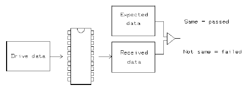

FunctionalTest
This test method examines the DUT at nominal level and timing settings (level and timing setup specified in the test suite) by performing a real time comparison between expected data and received data.
The sequencer is started at the label specified in the test suite. If any of the result displays (Error Map / Pin Error List, Pattern Tool or Timing Diagram) have been enabled, they get updated when the test method stops execution.
The purpose of this test method is to produce a pass or a fail result. This cannot be achieved if the sequencer is running in an endless loop. If you do need to run the sequencer in endless loops, for instance in order to stimulate the DUT with drive data while evaluating its output signal with other measurement equipment (such as an oscilloscope), always use the StartSequencer test method.

This test method supports test table. But you need to enter the test names manually in the parameter. You can use both test table and testflow limits in a testflow. The test table has higher priority than testflow limits. If a test name used in the test flow is defined in both test table and testflow limits, the value defined in the test table will be used.
Unburst support
This test method supports parallel unburst execution for multisite test. Burst labels will be unburst in the execution if the testflow flag unburst_mode is enabled. (The default value for the testflow flag unburst_mode is off, which means burst labels will not be unburst in the execution.)
testName |
The test names to be used as limits. Default is Functional. If you want to use the test names defined in the test table or testflow limits, type in the test names manually. Make sure the test names are in the Test name column of the test table (Refer to Structure of a TMLimits CSV file) or in the Test Name column of Tests page of Flow Data Editor. |
Limits
Functional |
It is only used to enter the test number. |
Implementation pseudo code
IF unburst off THEN
IF not already connected THEN
connect DUT
ENDIF
execute functional test
datalog test results
ELSEIF unburst on
FOR each unburst label
set label for sites
execute functional test for all sites
datalog test results
restore label
ELSEIF unburst on fail
execute functional test and remember the failed sites
datalog test results
FOR each unburst label
set label
execute functional test
datalog the unburst execution results for the failed sites
ENDIFFunctional changes
- Introduced before SmarTest 6.3.2
- SmarTest 7.0.3: Classic test method library is removed.
- SmarTest 7.0.3: New parameter testName.
- SmarTest 7.0.3: Test table is supported.
- SmarTest 7.1.1: Mixed usage of test table and testflow limits in one testflow is supported in TML 2.1.1.